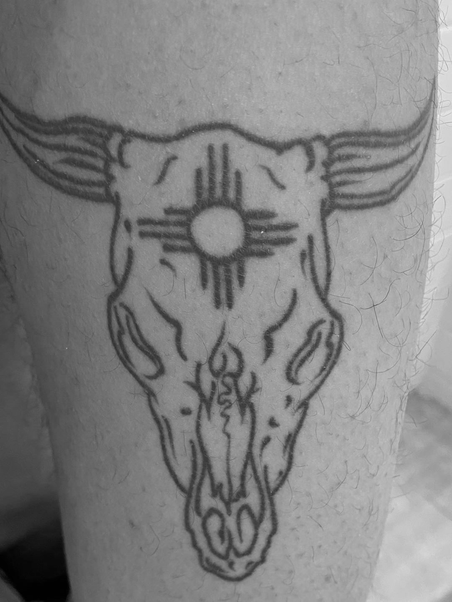

Bulls Skull
Bulls Skull
TATTOO ONE
Name - Xander Nazon
Tattoo and placement - Bulls skull on the left thigh.
How old are you? - 19 years old.
How old were you when you got this tattoo? - 18 years old.
How many tattoos do you have in total? - 2
How much did it cost you? - $60
Where did you get it done? - A tattoo parlour called Stay Gold in Albuquerque.
How long did it take? - Half an hour.
How impulsive was it? - It wasn’t that impulse. I mean, I was thinking about it for about a month. Some people might call that impulsive but I think that’s a good amount of time.
Does this tattoo have a meaning behind it? - The bull skull is meant to represent New Mexico. Where I was raised.
Is it your own artwork? - No but I would like to get my own work tattooed one day.
BACK BACK BACK BACK BACK BACK BACK BACK
